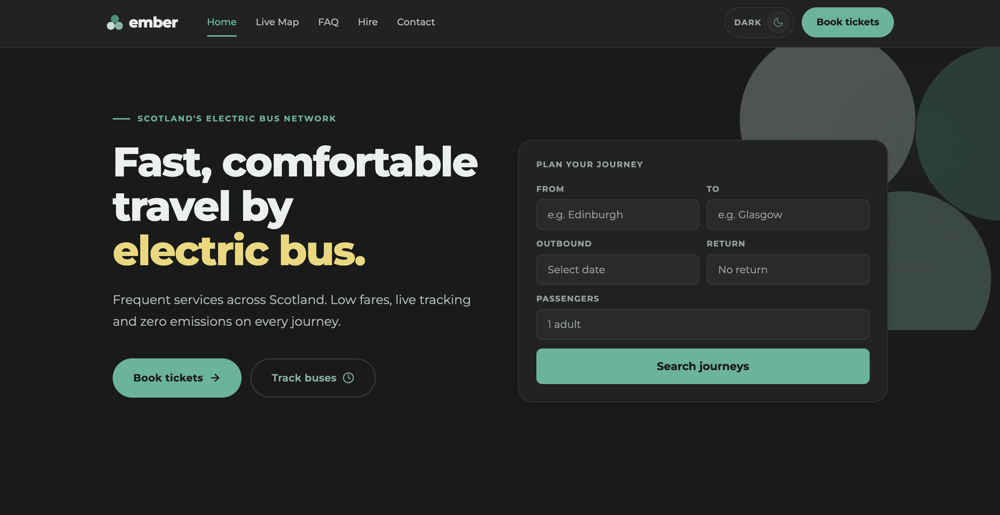
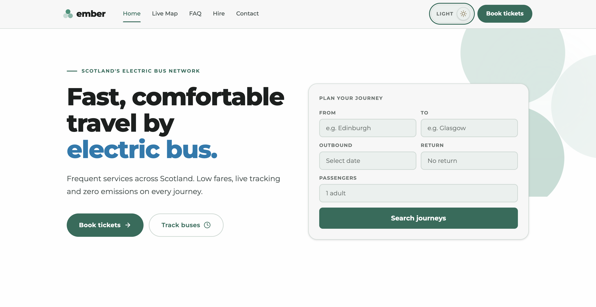
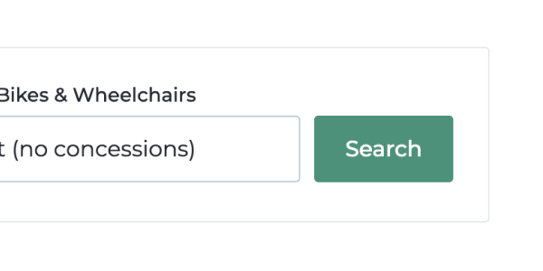
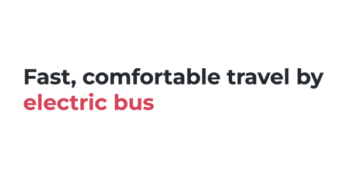
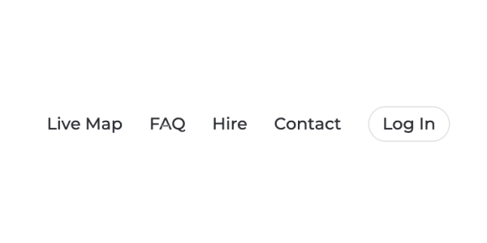
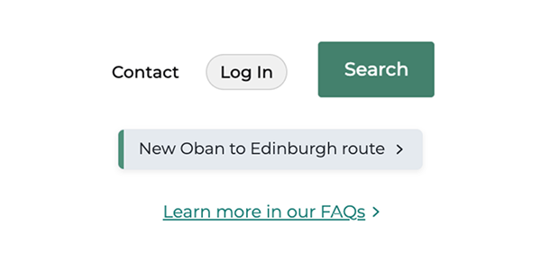

Ember.
A considered redesign.
Embers product is strong. The mission is clear - lead the way in all-electric intercity bus travel. From initial glance it’s hard to see why a designer is needed.
This case study will demonstrate two things - what a designer like me will bring to your team and how I use AI to quickly pull together and realise concepts.
We will look at where digital experience fell short of both, and document the design decisions taken to bring them into alignment.


This case study was built as part of an application for the designer role at Ember. The redesigned homepage and full design system are both live and explorable below.
01
The product was good.
The experience had gaps.
Ember's existing site was functional and broadly on-brand. Nothing was broken. But a closer look revealed a pattern of small, compounding decisions that quietly undermined both accessibility and trust. The visual language was inconsistent enough to introduce friction — not enough to stop users, but enough to stop the brand from landing with the confidence it deserved.
Four distinct issues were identified across colour, typography, navigation and interaction design.

Colour contrast
Primary green fails on white
The brand's primary green (#4F9179) was used for interactive text and buttons against white backgrounds, returning a contrast ratio of 3.1:1 — below the WCAG 2.2 AA threshold of 4.5:1 for normal-weight text.

Colour association
Red used to emphasise, not to warn
A strong red (#D34559) was applied as an emphasis colour throughout the site — used to draw attention to key claims and features. Red carries near-universal negative connotations across both cultural contexts and UI convention. For a brand built on optimism and sustainability, this was a subconscious mismatch.

Navigation
No active page indicator
The main navigation provided no visual indication of the user's current location within the site. This fails WCAG 2.2 Success Criterion 2.4.8 (Location) and removes a basic orientation cue that users — particularly those with cognitive or visual impairments — rely on.

Interaction design
Inconsistent hover and link states
Button styles, hover states, link hover behaviours and focus indicators were applied inconsistently across the site — mixing underline, opacity shift and colour change with no unifying logic. Focus-visible states were insufficient for keyboard navigation compliance under WCAG 2.2 SC 2.4.11.
02
What was done about it.
Rather than a rebrand, the approach was one of refinement. Ember's visual identity was preserved and strengthened. The work focused on closing the gap between what the brand said and what the interface communicated.
A full colour system was built from the existing palette
The original brand green (#4F9179) was retained as a mid-weight decorative token but replaced in interactive roles by a darkened accessible variant (#3A6B5A in light mode, #6DB39A in dark), both passing WCAG 2.2 AA. Contrast ratios were documented for every colour pairing across both modes. The red emphasis colour was removed entirely; emphasis is now carried by more natural yellow or blue tones, which reinforce the brand's environmental position rather than contradicting it.
Dark and light modes were designed as equals, not afterthoughts
Both modes were built simultaneously from the same token structure, ensuring no element was designed for one context and assumed to work in another. In dark mode, a cream-yellow accent (#E8D87A) was introduced as a warm, energetic counterpoint to the green system — specifically for the hero and high-emphasis moments. In light mode, a medium-blue (#3579AD) takes the same role, chosen for its calm authority and strong contrast at 4.6:1 on white. System preference is respected on first load; the user's choice is persisted.
A consistent interaction vocabulary was defined
A single set of interaction rules was established and applied universally: colour-shift on hover, border highlight on focus, scale on active. All interactive elements — buttons, links, nav items, inputs — now share the same behavioural logic. Focus-visible states use a 2px green outline with sufficient offset to meet WCAG 2.2 SC 2.4.11. The active navigation state was introduced as a 2px underline in the brand green, alongside aria-current="page" for screen reader support.
A semantic type scale was codified
Montserrat was retained — it's the right choice for the brand. What was missing was discipline in its application. A six-step scale was defined (display, h1, h2, h3, body, caption), each with fixed size, weight, line-height and letter-spacing values. Text colour roles were named semantically (text-primary, text-secondary, text-tertiary, text-interactive) and mapped to accessible values in both modes, removing the inconsistent colour application that had introduced confusion in the original.
03
What the changes resolve.
The outcome isn't a different brand — it's the same brand, held to a higher standard. Every decision taken is documentable, reversible, and grounded in either accessibility compliance or brand coherence. The result is a system that could be handed to any designer or developer and extended with confidence.
Contrast failures resolved
All interactive text, buttons and link colours now meet WCAG 2.2 AA as a minimum. The primary accessible green achieves 7.2:1 in light mode (AAA) and 4.6:1 in dark mode (AA). No colour pairing in the system falls below its required threshold.
WCAG 2.2 AA across all modesColour association corrected
Red is now reserved exclusively for semantic error states. Emphasis is carried by the light green and cream-yellow — colours that carry forward movement and optimism rather than warning. The subconscious message now matches the brand's intent.
Zero negative colour associationsNavigation orientation restored
The active page state is now visually clear (green underline, colour shift) and programmatically declared (aria-current="page"). Users always know where they are. WCAG 2.2 SC 2.4.8 is met in both modes.
Keyboard navigation compliant
Focus-visible states are consistent, visually distinct, and meet the minimum WCAG 2.2 SC 2.4.11 target area and contrast requirements. All interactive elements are reachable and operable by keyboard alone.
SC 2.4.11 compliantA living design system
The colour, type and spacing decisions are documented as a token-based system — not a static mockup. Both modes are built from the same structure, making future changes consistent by default rather than by effort.
Token-based, dual-modeBrand coherence strengthened
The refined palette, consistent interaction language and purposeful use of accent colours produce an experience that better reflects Ember's position — progressive, trustworthy, and built around the passenger. The brand now feels as considered as the product.
On-brand, consistant